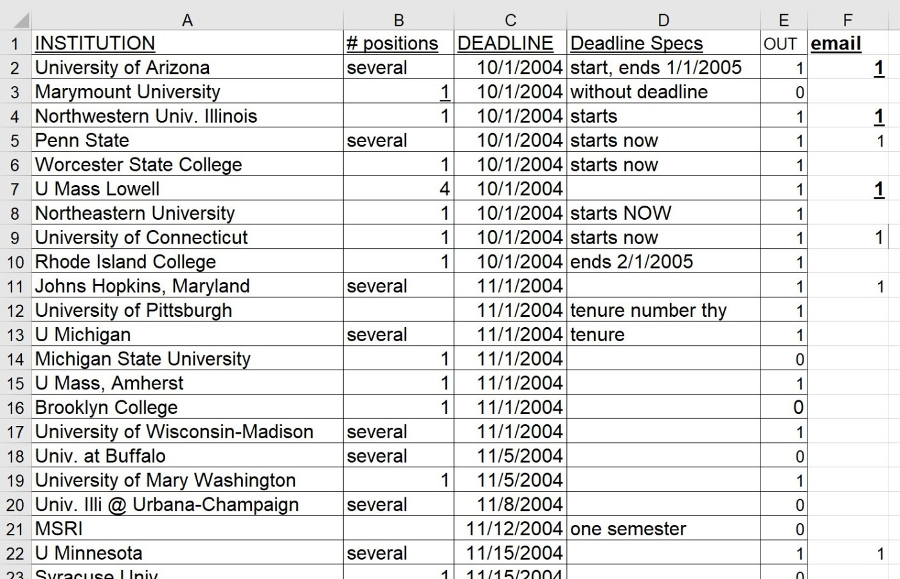
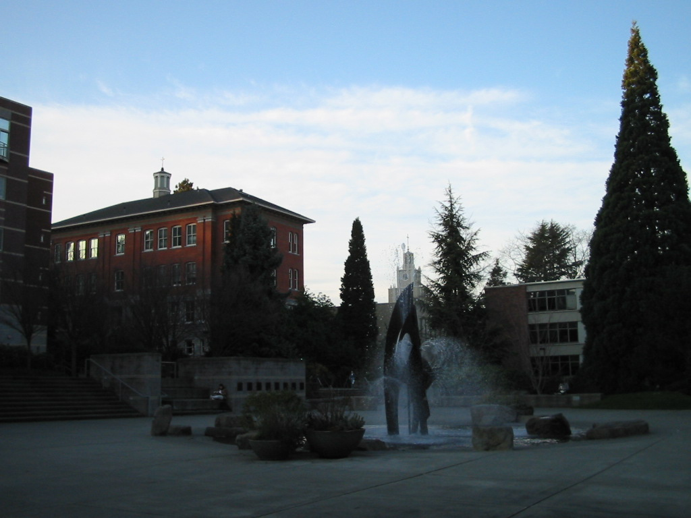
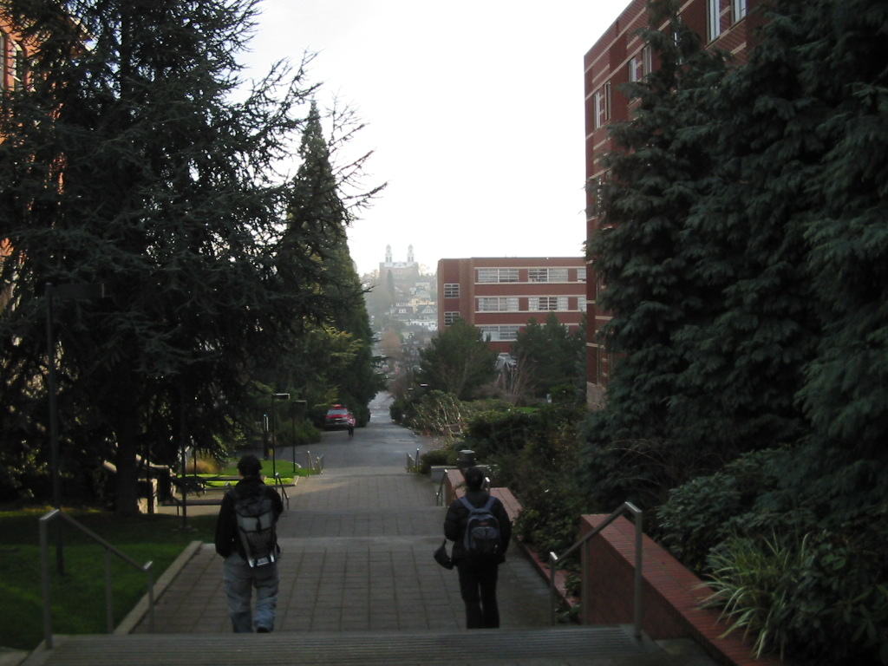
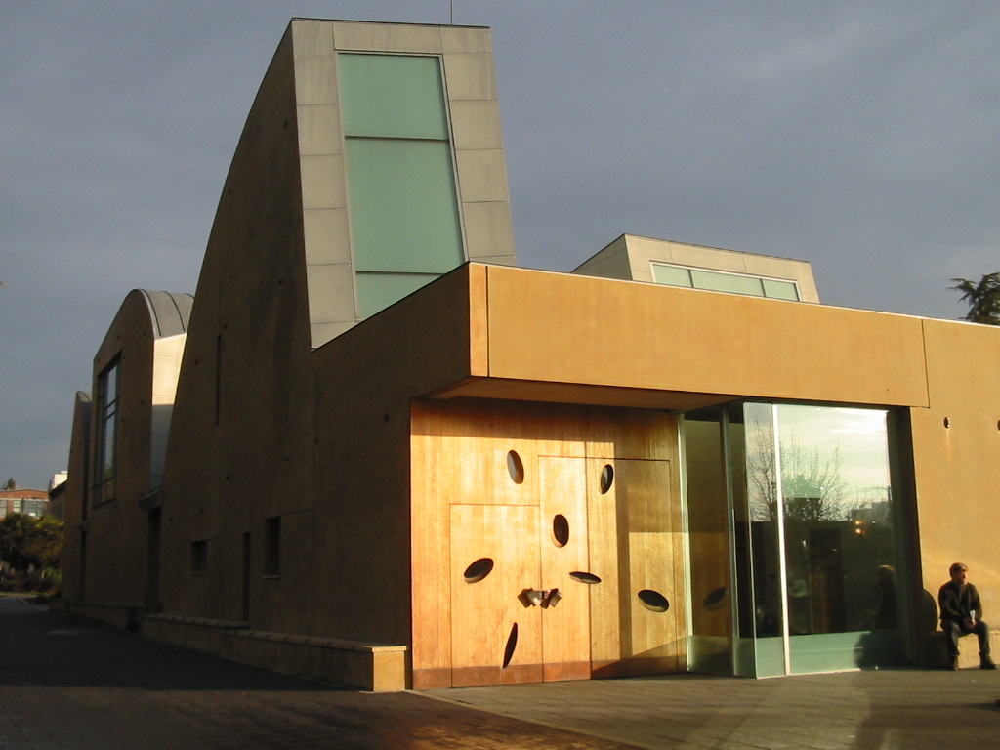
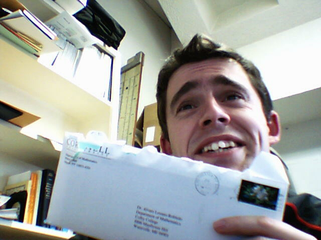
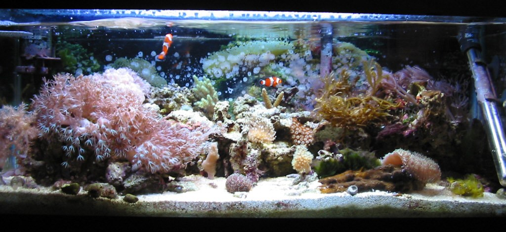

This post is Part 2 of a 3-part series of posts on my own twists and turns searching for academic jobs in mathematics. This post is about my second round on the job hunt, a few months after graduating, while I was settling in a new town and State, starting a new job at a different institution, trying to publish my thesis and work on new research, requesting a “green card” (permanent residency), and applying for jobs, simultaneously.
As I mentioned in my previous post (My Search For Jobs, Round #1) my first job after grad school was a visiting professorship (a Faculty Fellow, they called me) at Colby College. After the sobering experience of my first round applying for jobs, I felt lucky to have landed the job, and I still feel lucky today that I landed it. Unfortunately, the gig was one of those 1-year positions that are likely to be renewed for a second year, but you need to reapply for jobs anyway, just in case. This means that by the time the Fall semester started at Colby, I was already preparing for the job market, and stressing out about the outcome. Moving to and settling in a new town and State, starting a new job at a different institution, trying to publish my thesis and work on new research, requesting a “green card” (permanent residency), and applying for jobs, simultaneously? Yep, it was a lot.
As I started to put together my materials, and I updated the elements of my file, I couldn’t but obsess (more like panic) over the fact that I sent out close to 70 applications for jobs in the previous season, out of which I got exactly one response. What was wrong with my applications? There must have been something that I could fix. Maybe my teaching statement came off the wrong way. Perhaps there was some egregious mistake in my research statement. Probably, my work was not interesting enough. All of these thoughts were perfect fodder for my impostor syndrome.
I requested more feedback from my advisor, from Fernando and other faculty at Colby, as well as other people I knew, and I made the changes that were suggested. However, these amounted to little modifications, nothing drastic that improved my file in a palpable way. One section of my CV did change, however: I worked my butt off to get more papers out before applications were due. When I started to apply for the first time, in the Fall of 2003, I had two papers in preparation listed in my curriculum vitae. By the Fall of 2004, one paper was accepted, and three others had been submitted. I crossed my fingers that this would suffice. In the 2003-2004 job season I sent out about 70 job applications. In the 2004-05 season, determined to not leaving a stone unturned, I applied to over 100 jobs (including jobs at UConn!).
Apply for jobs, teach, do research — apply for jobs, teach, do research — lather, rinse, repeat, for a few months, and try to not stress out so much that you lose your mind.

In early January 2005, the first piece of encouraging news came my way. A university reached out to me! For a tenure-track job!! I was really excited. The search committee for the Mathematics department at Seattle University contacted me for a phone interview. It went well, and soon after they invited me to an on-campus interview.
Now, Seattle was not the ideal location my wife and I dreamed of. Her family lives in Massachusetts, and my family in Spain, so Seattle was in the wrong coast for our goals. Still, the job looked interesting, and Seattle is a cool city (neither one of us had been to Seattle, though), so we decided to go ahead with the interview. ** IF ** I got the job, then we would have to decide how long to stay in Seattle before trying to apply to jobs back on the East coast.



As far as I can remember, the interview at Seattle University went well. I gave a talk to faculty and students about elliptic curves, which I had already given during the interview process at Colby. The most memorable moment (perhaps the most overwhelming part of any interview I’ve been part of) was a meeting with all the members of the SU math faculty in a conference room, where everyone grilled me with questions about my research and my teaching, for what seemed an eternity.
At the end of the interview day, I met one more time with the Chair of the department, who assured me I had done a great job during my interview, and she seemed to hint that I was likely to get an offer. Of course, the words were vague and hard to decipher, so during my flight back home I speculated endlessly about the meaning of her phrasing. All I could do was hope for some good news in the next couple of weeks. However, I was the first candidate they brought to campus, so I had to patiently wait for some other unknown variables to potentially ruin my chances.
Time stands still when you are waiting for a message back from a hiring committee.
While I impatiently waited for news from Seattle, a wild email message appeared in my inbox. Not from an SU account, but from a Cornell University account. Ravi Ramakrishna was wondering if I was still available because, if so, there was an offer for a 3-year postdoc at Cornell coming my way.
Impostor Syndrome (IS): “It is a mistake, he sent a message to the wrong person.”
Me: “Hmmm, no? Look, it says my name in the message. Not a lot of “Alvaro”s in number theory in the USA…”
IS: “Fine, but he must be mistaken.”
Me: “Well, he is an expert in Galois representations, maybe he had a look at my thesis on Galois representations and found it interesting??”
IS: “Even if that is the case… When you arrive to Cornell and he realizes you know nothing about Galois representations? Then what?”
Me: “I … I do know a bit… obviously not as much as he does… isn’t that the point of a postdoc anyway?”
IS: “Yeah, but you do not belong there.”
Me: “OK, we are done here.”
If you have ever tried to debate your Impostor Syndrome, and you probably have, you know how it goes, and you can relate to the rapid fire of emotions – a combination of elation, incredulity, and insecurity – that went through my head as I was reading and re-reading Ravi’s message. I emailed Ravi back: “YES. HELL YES. I AM AVAILABLE FOR A POSTDOC AT CORNELL WORKING WITH YOU.” Or probably something similar in nature but more formal and measured.
A day or two later, I got a phone call from the Chair of Cornell’s Department of Mathematics, with an offer for a 3-year H. C. Wang Assistant Professorship. And a few days after that, I received the formal offer in the mail, and took a silly picture to immortalize what I knew was one of the most consequential moments of my career.

I had yet to hear back from Seattle University. Even though the possibility of a tenure-track position was quite enticing, I knew that I could not pass the fantastic opportunity of a postdoc at Cornell. So I contacted the Chair at SU, to let them know that I was withdrawing my application for their job, and to thank them for considering me for their position.
By early February, my job search was done. My wife and I drove to Ithaca, because we were so excited we could not wait to be there.
The outcome of the search was just about the best I could think of. I felt the privilege then, and I know my privilege now to have been given the chance to work there. My impostor syndrome reminds me that I was so lucky that year, that the planets aligned so that other candidates, far more qualified than I was, were unavailable by the time the offer came down to me. Needless to say, I am extremely grateful to Ravi and the Cornell math department for the incredible boost to my career.
Be that as it may, I took full advantage of the opportunity given to me, to learn and do as much research as I could, to improve my teaching, and to be as prepared as possible for the next round in the job market.
